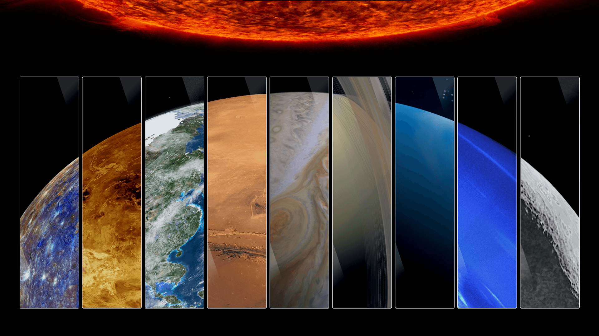
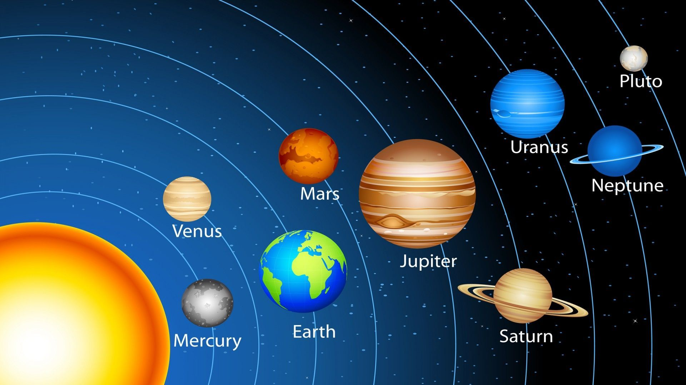
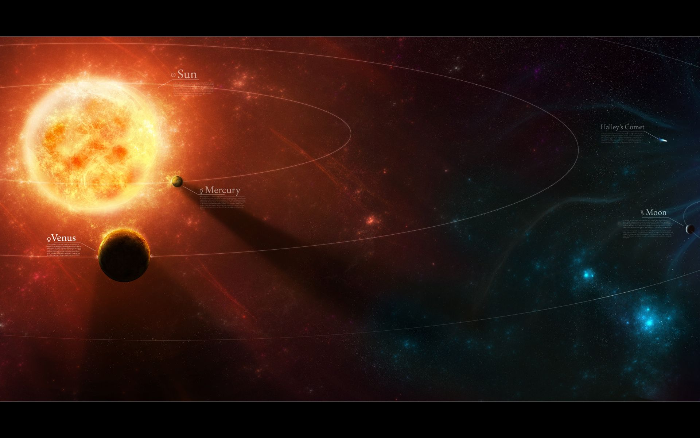
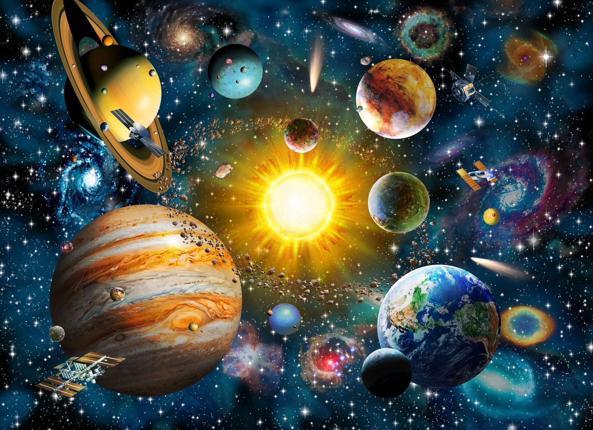
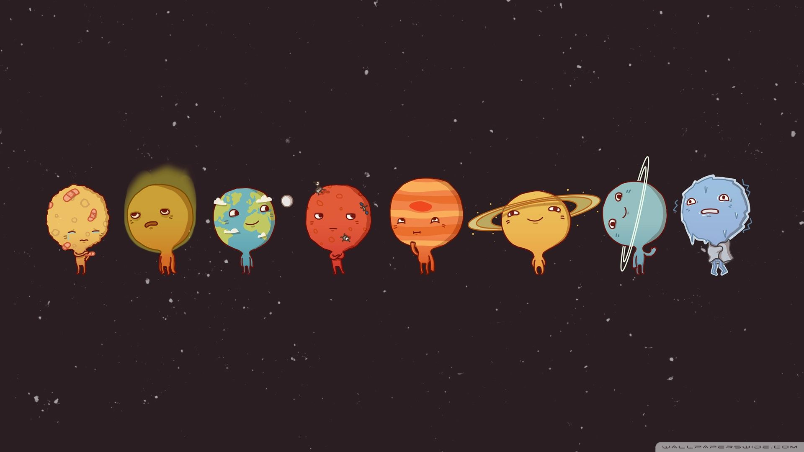

planets in our solar system

Mercury
Mercury—the smallest planet in our solar system and closest to the Sun—is only slightly
larger than Earth's Moon. Mercury is the fastest planet, zipping around the Sun every 88
Earth days.

Venus
Venus spins slowly in the opposite direction from most planets. A thick atmosphere
traps heat in a runaway greenhouse effect, making it the hottest planet in our solar
system.

Earth
Venus spins slowly in the opposite direction from most planets. A thick atmosphere
traps heat in a runaway greenhouse effect, making it the hottest planet in our solar
system.

Mars
Mars is a dusty, cold, desert world with a very thin atmosphere. There is strong
evidence Mars was - billions of years ago - wetter and warmer, with a thicker
atmosphere.

Jupiter
Jupiter is more than twice as massive than the other planets of our solar system
combined. The giant planet's Great Red spot is a centuries-old storm bigger than Earth.

Saturn
Adorned with a dazzling, complex system of icy rings, Saturn is unique in our solar
system. The other giant planets have rings, but none are as spectacular as Saturn's.

Uranus
Uranus—seventh planet from the Sun—rotates at a nearly 90-degree angle from the plane
of its orbit. This unique tilt makes Uranus appear to spin on its side.

Neptune
Neptune—the eighth and most distant major planet orbiting our Sun—is dark, cold and
whipped by supersonic winds. It was the first planet located through mathematical
calculations.




